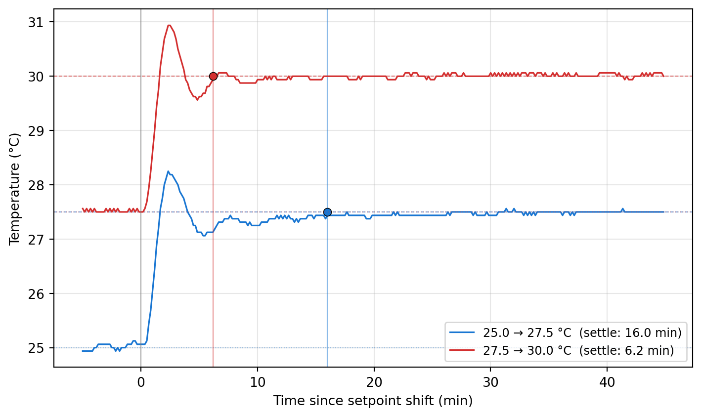

Code
import numpy as np
import pandas as pd
import matplotlib.pyplot as plt
CSV_URL = ("https://raw.githubusercontent.com/livingphysics/bioreactor_v3/"
"main/src/bioreactor_data/bioreactor_data.csv")
df = pd.read_csv(CSV_URL)
t_min = df['elapsed_time'].values.astype(float) / 60.0
T = df['temperature_C'].values.astype(float)
# Setpoint schedule from examples/yeast_ekf.py (temperature_profile):
# stage 1: 0 → 180 min @ 25.0 °C
# stage 2: 180 → 360 min @ 27.5 °C
# stage 3: 360 min → end @ 30.0 °C
profile = [(0.0, 25.0), (180.0, 27.5), (360.0, 30.0)]
transitions = [(profile[k][0], profile[k - 1][1], profile[k][1])
for k in range(1, len(profile))]
WINDOW_BEFORE = 5.0
WINDOW_AFTER = 45.0
TOL = 0.1
HOLD = 1.0
fig, ax_t = plt.subplots(1, 1, figsize=(7.5, 4.5))
colors = ['#1976D2', '#D32F2F', '#388E3C', '#7B1FA2']
for k, (t0, T_before, T_after) in enumerate(transitions):
mask = (t_min >= t0 - WINDOW_BEFORE) & (t_min <= t0 + WINDOW_AFTER)
tt = t_min[mask] - t0
TT = T[mask]
c = colors[k % len(colors)]
err = np.abs(TT - T_after)
after = tt >= 0
tt_a = tt[after]; err_a = err[after]
settle_t = np.nan
within = err_a <= TOL
for j in range(len(tt_a)):
if not within[j]:
continue
j_end = np.searchsorted(tt_a, tt_a[j] + HOLD)
if j_end <= len(tt_a) and np.all(within[j:j_end]):
settle_t = tt_a[j]
break
settle_txt = f'{settle_t:.1f} min' if np.isfinite(settle_t) else '—'
label = f'{T_before:.1f} → {T_after:.1f} °C (settle: {settle_txt})'
ax_t.plot(tt, TT, '-', color=c, linewidth=1.2, label=label)
ax_t.axhline(T_before, color=c, linestyle=':', linewidth=0.7, alpha=0.5)
ax_t.axhline(T_after, color=c, linestyle='--', linewidth=0.7, alpha=0.7)
if np.isfinite(settle_t):
ax_t.axvline(settle_t, color=c, linestyle='-', linewidth=0.8, alpha=0.5)
ax_t.plot(settle_t, T_after, 'o', color=c, markersize=6,
markeredgecolor='black', markeredgewidth=0.6)
ax_t.axvline(0, color='grey', linewidth=0.8, alpha=0.6)
ax_t.set_xlabel('Time since setpoint shift (min)')
ax_t.set_ylabel('Temperature (°C)')
ax_t.legend(loc='lower right', fontsize=9)
ax_t.grid(True, alpha=0.3)
plt.tight_layout()
plt.show()